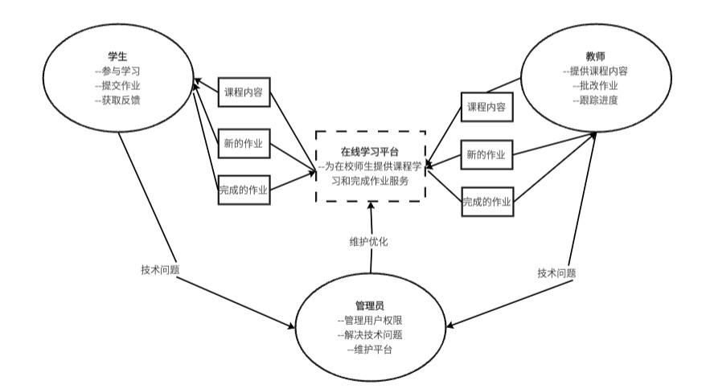

Project Description
该项目的重点是开发一种以用户为中心的在线学习平台，以改善在线学习的体验。该项目包括通过Flow Model、HMW Questions、Personas、Storyboards对用户需求进行详细分析。
目标是创建一个平台，为学生和教育工作者提供帮助的工具，以提高参与度、效率和协作能力。
Team Introduction
消防栓队
我们是由3名大学生组成的团队，致力于创建一个优秀的在线学习平台，以用户为中心，解决师生教与学中遇到的问题。
团队成员是吴小龙 & 李元孜 & 赵靖宇。
Flow Model
Flow Model 包括学生、教师、管理员、在线学习平台以及交互关系:
HMW Questions
用以解决问题方案设计的HMW问题:
- HMW 帮助学生更容易找到与他们学习目标相关的课程?
- HMW 确保教师能够及时给予学生反馈?
- HMW 帮助学生更好地跟踪自己的学习进度?
- HMW 增强学生对平台的参与度?
- HMW 改进学生与平台支持人员的沟通?
- HMW 减少课程的退课率?